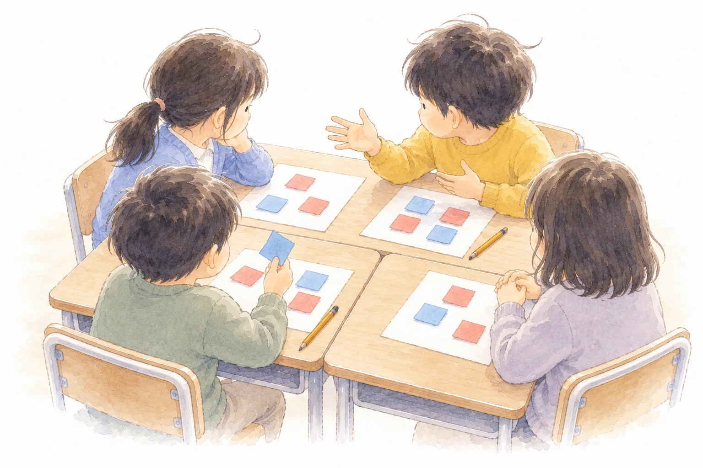

Board
板書計画
マス目プリントメーカーの板書計画で作りました。黒板の下の3つの欄は「発問と、予想される反応」です。編集用ファイルは、マス目プリントメーカーの「ひらく」で読みこむと、そのまま直せます。

第7時 第３次【本時】 金ぞく① 本時
Lesson 07
金ぞくは、あたためたり冷やしたりすると、体積は変わるのだろうか

Lesson 7 / Metal? (research lesson)
Aim
学習活動・学びの足跡と分類表をふり返り、金ぞくの玉にさわって、考えのちがいから問題をつくる。
目指す児童の姿空気と水の結論や分類表と関係付け、「金ぞくは、あたためたり冷やしたりすると、体積は変わるのだろうか」という問題を見いだす。
学習活動・予想と理由を書いて、ひとりで書く、となりの人に言う、班で話す、の順に話し合い、見直す。
・輪を知り、玉と輪を使った実験の方法を考え、結果を見通す。
目指す児童の姿空気や水の結論や生活経験と関係付けて根拠のある予想を発想し、「予想が正しければ、玉は輪を通らなくなるはず」と結果を見通して計画を立てている。
指導案の着眼１の表（第３次【本時】）より。第◯次の中での時間の割りふりは案です。
On screen
この時間の問い
金ぞくは、あたためたり冷やしたりすると、体積は変わるのだろうか
問題は、子どもとつくってから映します。ふりがなは、この欄だけに付けています。
Flow
本時の流れの案です（2026年10月7日）。はじめは輪を見せず、金ぞくの玉だけを配ります。青の線は「変わる」、赤の線は「変わらない」と考える子の反応です。
場面1 学びの足跡をふり返る
場面2 金ぞくの玉だけを配る
場面3 考えのズレから問題をつくる
場面4 予想して、班で話し合う
場面5 全体で交流し、ズレをはっきりさせる
場面6 輪を見せて、実験を考える
Experiment
Board
マス目プリントメーカーの板書計画で作りました。黒板の下の3つの欄は「発問と、予想される反応」です。編集用ファイルは、マス目プリントメーカーの「ひらく」で読みこむと、そのまま直せます。
Wrap up
空気、ほかの物は？（分類表）、水、金ぞく。予想の理由を考えるときに指さす。写真の欄は授業の写真に差しかえる。ふり返りの言葉の欄つき。
話し合いの順番と司会のことば。班に1つ。
全体の交流で、聞く子が「にている」「ちがう」を上げる。
予想と理由の型。その段階の2〜3本だけを出す。